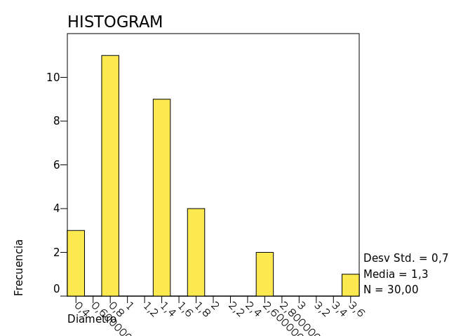

GET DATA
GET DATA
/TYPE=TXT
/FILE="/home/kenneth/Dropbox/sem201501/unac/estadistica/circulos2/Muestra_Kenneth.csv"
/IMPORTCASES=ALL
/ARRANGEMENT=DELIMITED
/DELCASE=LINE
/FIRSTCASE=2
/DELIMITERS=";"
/VARIABLES=
Nombre A9
NumCirculo F3.0
Diametro F3.1.
FREQUENCIES
FREQUENCIES
/VARIABLES= Diametro
/FORMAT=AVALUE TABLE
/STATISTICS=ALL
/HISTOGRAM=NONORMAL.
Diametro
| Etiqueta de Valor |
Valor |
Frecuencia |
Porcentaje |
Porcentaje Válido |
Porcentaje Acumulado |
|
,4 |
3 |
10,00 |
10,00 |
10,00 |
|
,9 |
11 |
36,67 |
36,67 |
46,67 |
|
1,4 |
9 |
30,00 |
30,00 |
76,67 |
|
1,8 |
4 |
13,33 |
13,33 |
90,00 |
|
2,7 |
2 |
6,67 |
6,67 |
96,67 |
|
3,6 |
1 |
3,33 |
3,33 |
100,00 |
| Total |
30 |
100,0 |
100,0 |
|
Diametro
| N |
Válido |
30 |
|
Perdidos |
0 |
| Media |
|
1,33 |
| Err.Est.Media |
|
,13 |
| Modo |
|
,90 |
| Desv Std |
|
,71 |
| Varianza |
|
,50 |
| Curtosis |
|
2,87 |
| Err.Est.Curt. |
|
,83 |
| Asimetría |
|
1,47 |
| Err.Est.Asim. |
|
,43 |
| Intervalo |
|
3,20 |
| Mínimo |
|
,40 |
| Máximo |
|
3,60 |
| Suma |
|
39,90 |
|
50 (Mediana) |
1,4 |
